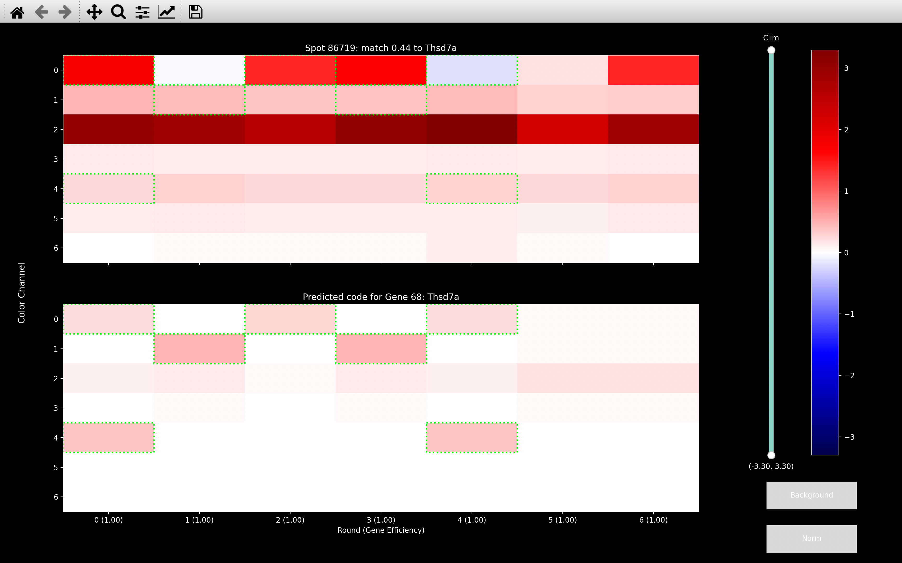
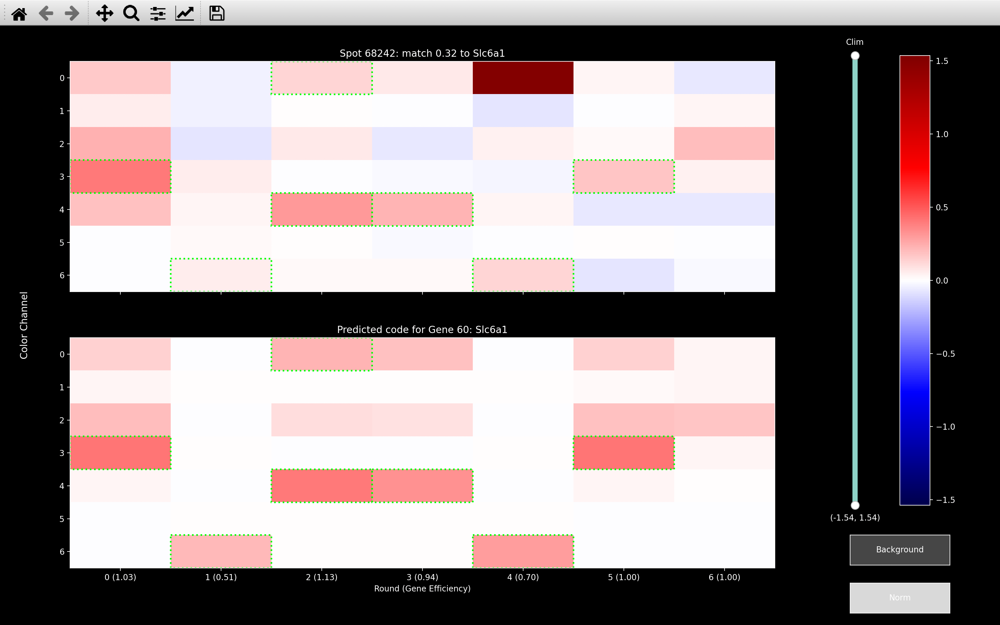
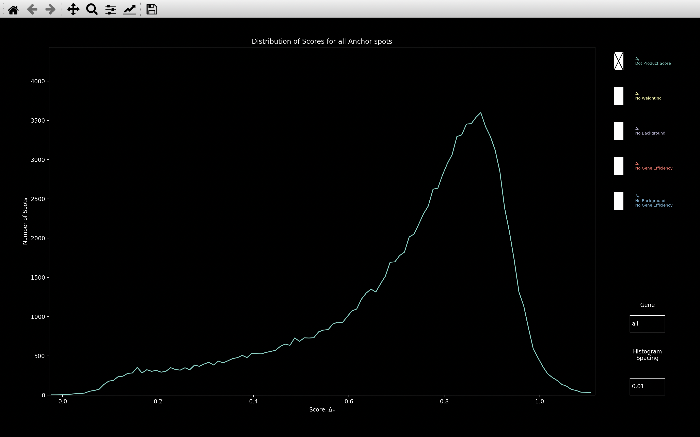

Call Reference Spots
The call reference spots step of the pipeline uses the
\(n_{rounds} \times n_{channels}\) color obtained for each reference spot
(detected on the reference round/reference channel, \(r_{ref}\)/\(c_{ref}\)) in the
get reference spots step of the pipeline to compute the bleed_matrix, accounting
for crosstalk between color channels. We then compute the gene_efficiency which allows for varying round
strengths for each gene, before assigning each reference spot to a gene.
These gene assignments are saved in the ref_spots NotebookPage,
while the bleed_matrix and expected bled_code for each gene are saved in the
call_spots NotebookPage. The distribution of the genes can be
seen using coppafish.Viewer once these pages have been added.
Note: config in this section, with no section specified, means config['call_spots']
Re-run call_reference_spots
To re-run the call reference spots step of the pipeline
of the pipeline with different parameters in the configuration file, the
call_spots page must be
deleted and then the run_reference_spots
function must be called with overwrite_ref_spots = True.
This is so the variables gene_no, score, score_diff, intensity in the
ref_spots page will be updated.
Example
The code below illustrates how you can re-run the
call reference spots step of the pipeline step
of the pipeline without weighting or gene_efficiency.
import numpy as np
from coppafish import Notebook
from coppafish.pipeline.run import run_reference_spots
nb_file = '/Users/user/coppafish/experiment/notebook.npz'
# Save new notebook with different name so it does not overwrite old notebook
# Make sure notebook_name is specified in [file_names] section
# of settings_new.ini file to be same as name given here.
nb_file_new = '/Users/user/coppafish/experiment/notebook_new.npz'
ini_file_new = '/Users/user/coppafish/experiment/settings_new.ini'
# config_file not given so will use last one saved to Notebook
nb = Notebook(nb_file)
config = nb.get_config()['call_spots']
print('Using config file saved to notebook:')
print(f"alpha: {config['alpha']}")
print(f"gene_efficiency_n_iter: {config['gene_efficiency_n_iter']}")
print(f"First 5 gene assignments: {nb.ref_spots.gene_no[:5]}")
print(f"First 5 spot scores: {np.around(nb.ref_spots.score[:5], 3)}")
print(f"Bled Code of Gene 0, Round 0: {np.around(nb.call_spots.bled_codes_ge[0,0], 2)}")
# Change call_spots
del nb.call_spots # delete old call_spots
nb.save(nb_file_new) # save Notebook with no call_spots page to new file
# so does not overwrite old Notebook
# Load in new notebook with new config file
nb_new = Notebook(nb_file_new, ini_file_new)
config_new = nb_new.get_config()['call_spots']
# Show that config params have changed
print(f'\nUsing new config file but before re-running:')
print(f"alpha: {config_new['alpha']}")
print(f"gene_efficiency_n_iter: {config_new['gene_efficiency_n_iter']}")
# Show that ref_spots page variables are still the same
print(f"First 5 gene assignments: {nb_new.ref_spots.gene_no[:5]}")
print(f"First 5 spot scores: {np.around(nb_new.ref_spots.score[:5], 3)}")
# Get new call_spots page
run_reference_spots(nb_new, overwrite_ref_spots=True)
print(f'\nUsing new config file after re-running:')
print(f"alpha: {config_new['alpha']}")
print(f"gene_efficiency_n_iter: {config_new['gene_efficiency_n_iter']}")
# Show that ref_spots and call_spots page variables have been updated
print(f"First 5 gene assignments: {nb_new.ref_spots.gene_no[:5]}")
print(f"First 5 spot scores: {np.around(nb_new.ref_spots.score[:5], 3)}")
print(f"Bled Code of Gene 0, Round 0: {np.around(nb_new.call_spots.bled_codes_ge[0,0], 2)}")
Using config file saved to notebook:
alpha: 120.0
gene_efficiency_n_iter: 10
First 5 gene assignments: [17 17 17 13 17]
First 5 spot scores: [0.645 0.806 0.702 0.692 0.796]
Bled Code of Gene 0, Round 0: [ 0.04 0. 0. -0. 0. -0. -0. ]
Using new config file but before re-running:
alpha: 0.0
gene_efficiency_n_iter: 0
First 5 gene assignments: [17 17 17 13 17]
First 5 spot scores: [0.645 0.806 0.702 0.692 0.796]
Using new config file after re-running:
alpha: 0.0
gene_efficiency_n_iter: 0
First 5 gene assignments: [17 17 17 13 17]
First 5 spot scores: [0.65 0.776 0.744 0.65 0.797]
Bled Code of Gene 0, Round 0: [ 0.25 0. 0.03 -0. 0.01 -0. -0. ]
[file_names]
input_dir = /Users/user/coppafish/experiment1/raw
output_dir = /Users/user/coppafish/experiment1/output
tile_dir = /Users/user/coppafish/experiment1/tiles
round = Exp1_r0, Exp1_r1, Exp1_r2, Exp1_r3, Exp1_r4, Exp1_r5, Exp1_r6
anchor = Exp1_anchor
code_book = /Users/user/coppafish/experiment1/codebook.txt
[basic_info]
is_3d = True
anchor_channel = 4
dapi_channel = 0
[file_names]
input_dir = /Users/user/coppafish/experiment1/raw
output_dir = /Users/user/coppafish/experiment1/output
tile_dir = /Users/user/coppafish/experiment1/tiles
round = Exp1_r0, Exp1_r1, Exp1_r2, Exp1_r3, Exp1_r4, Exp1_r5, Exp1_r6
anchor = Exp1_anchor
code_book = /Users/user/coppafish/experiment1/codebook.txt
notebook_name = notebook_new
[basic_info]
is_3d = True
anchor_channel = 4
dapi_channel = 0
[call_spots]
gene_efficiency_n_iter = 0
alpha = 0
Color Normalisation
We assign a spot \(s\) to a gene \(g\), based on its \(n_{rounds} \times n_{channels}\) color, \(\pmb{\acute{\zeta}_s}\),
indicating the intensity in each round and channel.
However, we first need to equalize color channels, so that no one color channel dominates the others when
it comes to gene assignment. The normalised spot_colors, \(\pmb{\zeta}\), are obtained by dividing the saved
spot_colors, \(\pmb{\acute{\zeta}}\), by a \(n_{rounds} \times n_{channels}\)
normalisation factor, nb.call_spots.color_norm_factor.
Why do we need to normalise color channels?
The gene assignment of the spot below indicates why we need to normalise color channels.
With no normalisation, the gene assignment is overly influenced by channel 4, which
is one of the most intense channels (see color_norm_factor in example box below). Thus it matches
to Reln which appears in channel 4 in rounds 0, 1, 5 and 6. It also doesn't care at all about
channel 2 because it is the weakest channel and Reln does not appear in channel 2 in any rounds.
With normalisation, the most obvious effect is channel 2 gets boosted and now has an influence. Given that Id2 appears in channel 2 in rounds 1, 3, 5 and 6, if channel 2 was never considered, it would always make the score to Id2 low. When we include channel 2 though, we get a high score even though we are not matching the round 0, channel 4 intensity which contributed to the Reln assignment without normalisation.
This is obtained
using the parameters config['color_norm_intensities'] and
config['color_norm_probs'] such that for each round, \(r\), and channel \(c\),
the probability of \(\zeta_{rc}\) being larger than
config['color_norm_intensities'][i] is less than config['color_norm_probs'][i] for each \(i\).
The probabilities come from the histograms produced in the extract and filter step i.e.
if config['color_norm_intensities'] = 0.5 and config['color_norm_probs'] = 0.01, then
in each round and channel, only 1% of pixels on the mid z-plane across all tiles would have \(\zeta_{rc} > 0.5\).
If config[bleed_matrix_method] = 'single', then we combine all rounds for each channel so that
nb.call_spots.color_norm_factor[r, c] is the same for all \(r\) of a particular \(c\).
Example
With config['color_norm_intensities'] = 0.5, 1, 5 and config['color_norm_probs'] = 0.01, 5e-4, 1e-5
and the histograms shown in the extract and filter step,
the two methods of config[bleed_matrix_method] produce the following color_norm_factor:
The normalised histogram shown was normalised using the Single color_norm_factor
and you can see that for each round and channel, there is a similar area under the curve
(probability) beyond \(\zeta_{rc}=0.5\), as expected from config['color_norm_intensities'].
Background
After we have the normalised spot colors, \(\pmb{\zeta}\), we remove some background genes from them. There is one background gene for each channel, \(\pmb{B}_C\). The background gene for channel \(C\) is defined by: \(\pmb{B}_{C_{rc}}=1\) if \(c = C\) and 0 otherwise i.e. it is just a strip in channel \(C\):
It is also normalised to have an L2 norm of 1. These are saved as nb.call_spots.background_codes.
Why do we need to fit background genes?
We fit the background genes because it is fairly common for \(\pmb{\zeta}_s\) to have high intensity
across all rounds of a channel as shown for the example view_codes
plot below:

No gene in the codebook looks that much like a background gene but if the background genes have not been fit, as with the first image above, spots like this will match to the gene which has the most rounds in the relavent channel/s. Here, Thsd7a has intensity in channel 2 in all rounds apart from round 2. This problem will be exacerbated in the omp step, because at each iteration of the OMP algorithm, it will just try and fit more and more genes to explain the intense channel.
If we do remove background though, as with the second image, the gene assignment will be based on the other channels where not all rounds were intense. In this case, we get a match to Sst due to round 2 and 3 in channel 0.
If we look at histogram_score for Thsd7a, we see that without background removal
(purple), the peak in score is significantly larger:
This indicates that without background removal, we would end up with a lot more spots assigned to genes like Thsd7a which have high intensity in most rounds of a single channel.
The coefficient, \(\mu_{sC}\), for the channel \(C\) background gene, \(\pmb{B}_C\), fit to the spot \(s\) color, \(\pmb{\zeta}_s\) is:
Where, \(\lambda_b\) is config['background_weight_shift'] and the sum is over all rounds used.
Value of \(\lambda_b\)
If config['background_weight_shift'] is left blank, it is set to the median of the intensity
computed from the absolute colors, \(\tilde{\chi}\),
of all pixels in the middle z-plane (nb.call_spots.norm_shift_tile)
of the central tile (nb.call_spots.norm_shift_z).
This is because it gives an estimate of what \(|\zeta_{s_{rC}}|\) would be for an average non-spot pixel. If we set \(\lambda_b\) to be equal to this, it is saying that if a spot had a round and channel with very low intensity, then that round and channel would have as much influence on the final coefficient as an average pixel.
If \(\lambda_b = 0\), then \(w_{rc}\) would go to \(\infty\) for low intensity rounds and channels, so the value of \(\lambda_b\) chosen also provides an upper bound on the contribution of low intensity rounds and channels to the final coefficient.
If the weighting, \(\pmb{w}\), was a constant across rounds and channels (\(\lambda_b = \infty\)), this would just be the least squares solution. After we have found the coefficients, we remove the background contribution from the spot colors to give \(\pmb{\zeta}_{{s0}}\) which we use from now on.
Why do we need a weighting?
We find \(\mu_{sC}\) via weighted least squares, because it limits the influence of outliers. The example below shows that with \(\lambda_b = \infty\) (normal least squares), it really tries to remove the outlier in round 4, channel 0. The result of this is that all the other rounds of channel 0 become very negative.

This spot should be Slc6a1 as shown from the \(\lambda_b = 0.08\) image, but Slc6a1 is expected to be in 4 of the 6 rounds that were set to negative by the background fitting with \(\lambda_b = \infty\). Thus, this spot can no longer be assigned to the correct gene after \(\lambda_b = \infty\) background fitting.
So basically, the job of the background fitting is to remove intensity in a particular channel if that channel is intense across all rounds. This is because there are no actual genes which can explain this. We do not want it to tone down outlier rounds and channels because outliers are usually due to actual genes.
view_background
The background coefficient calculation can be visualised by using the
view_background function:
For each plot, each row corresponds to a different background gene coefficient calculation i.e. a different channel. There is no overlap between the background codes hence we can view all the calculations at the same time.
Round \(r\), channel \(c\) in the Weighted Dot Product plot refers to the value of \(\frac{w^2_{rc}\zeta_{s_{rc}}B_{C_{rc}}}{\sum_rw^2_{rC}B^2_{C_{rC}}}\). The Dot Product plot is the same as the Weighted Dot Product plot except \(\lambda_b = \infty\).
The Weighted Coef plot thus shows the coefficient computed for the current value of \(\lambda_b\) (0.08 here, but can be specified in the textbox). The Coef plot shows the coefficient that would be computed with \(\lambda_b = \infty\).
The main difference between the two in this case is that the channel 0 coefficient is much larger for the \(\lambda_b = \infty\) case. This is because the Weight Squared, \(\Omega^2_{s_{rc}}\) term acts to increase the contribution of the weak round 1, channel 0 and decrease the contribution of the strong rounds: 0, 2, 3 and 6.
Bleed Matrix
Crosstalk can occur between color channels. Some crosstalk may occur due to optical bleedthrough; additional crosstalk can occur due to chemical cross-reactivity of probes. The precise degree of crosstalk does not seem to vary much between sequencing rounds. It is therefore possible to largely compensate for this crosstalk by learning the precise amount of crosstalk between each pair of color channels.
To estimate the crosstalk, we use the spot colors, \(\pmb{\zeta}_{s0}\), of all well isolated spots. We reshape these, so we have a set of \(n_{isolated} \times n_{rounds}\) vectors, each of dimension \(n_{channels}\), \(\pmb{v}_i\) (\(v_{0_c} = \zeta_{{s=0,0}_{r=0,c}}\)). Only well-isolated spots are used to ensure that crosstalk estimation is not affected by spatial overlap of spots corresponding to different genes.
Crosstalk is then estimated by running a scaled k-means algorithm on these vectors, which finds a set of \(n_{dyes}\) vectors, \(\pmb{c}_d\), such that the error function:
is minimized. In other words, it finds the \(n_{dyes}\) intensity vectors, \(\pmb{c}_d\), each of dimension
\(n_{channels}\), such that the spot color of each well isolated spot on every round is close to a scaled version of
one of them. The \(n_{dyes} \times n_{channels}\)
array of dye vectors is termed the bleed matrix and is saved as nb.call_spots.bleed_matrix (a bleed_matrix
is saved for each round, but if config['bleed_matrix_method'] = 'single', it will be the same for each round).
The view_bleed_matrix function can be used to show it:
As shown in the second plot, if config['bleed_matrix_method'] = 'separate', we compute a different
bleed_matrix for each round - i.e. we loosen the assumption that crosstalk does not vary between sequencing rounds.
Initial Bleed Matrix
To estimate the dye intensity vectors, \(\pmb{c}_d\), the
scaled_k_means algorithm
needs to know the number of dyes and a starting guess for what each dye vector looks like.
This is specified in the basic_info section of the configuration file as explained
here.
Scaled K Means
The pseudocode for the scaled_k_means
algorithm to obtain the dye intensity vectors, \(\pmb{c}_d\), is given below:
v: Single round intensity vectors of well isolated spots
[n_vectors x n_channels]
c: Initial Guess of Bleed Matrix
[n_dyes x n_channels]
dye_ind_old: [n_vectors] array of zeros.
v_norm = v normalised so each vector has an L2 norm of 1.
Normalise c so that each dye vector has an L2 norm of 1.
i = 0
while i < n_iter:
score = dot product between each vector in v_norm and each
dye in c. [n_vectors x n_dyes]
top_score = highest score across dyes for each vector
in v_norm. [n_vectors].
dye_ind = dye corresponding to top_score for each vector
in v_norm. [n_vectors].
if dye_ind == dye_ind_old:
Stop iteration because we have reached convergence
i.e. i = n_iter
dye_ind_old = dye_ind
for d in range(n_dyes):
v_use = all vectors in v with dye_ind = d and
top_score > score_thresh.
Use un-normalised as to avoid overweighting weak points.
[n_use x n_channels]
if n_use < min_size:
c[d] = 0
else:
Update c[d] to be top svd component of v_use i.e.
v_matrix = v_use.transpose() @ v_use / n_use
[n_channels x n_channels]
c[d] = np.linalg.svd(v_matrix)[0][:, 0]
[n_channels]
i = i + 1
return c
bleed_matrix_n_iter: This isn_iterin the above code.bleed_matrix_min_cluster_size: This ismin_sizein the above code.bleed_matrix_score_thresh: This isscore_threshin the above code.bleed_matrix_anneal: If this isTrue, thescaled_k_meansalgorithm will be run twice. The second time will use \(\pmb{c}_d\) returned from the first run as the starting point, and it will have a differentscore_threshfor each dye.score_threshfor dye \(d\) will be equal to the median oftop_score[dye_ind == d]in the last iteration of the first run. The idea is that for the second run, we only use vectors which have a large score, to get a more accurate estimate.
view_scaled_k_means
The scaled_k_means algorithm
can be visualised using the view_scaled_k_means function:
In each column, in the top row, boxplot \(d\) is for top_score[dye_ind == d] (only showing scores above
score_thresh - 0 for the first two columns). The dye vectors, \(\pmb{c}_d\), are indicated in the second
row. The number of vectors assigned to each dye is indicated by the number within each boxplot.
The first column is for the first iteration i.e. with the initial guess of the bleed matrix.
The second column is after the first scaled_k_means algorithm has finished.
The third column is after the second scaled_k_means algorithm has finished (only shown if bleed_matrix_anneal=True).
The bottom whisker of the boxplots in the third column indicate the score_thresh used for each dye.
This is useful for debugging the bleed_matrix computation, as you want the boxplots to show high scores and for those
scores to increase from left to right as the algorithm is run.
Gene Bled Codes
Once the bleed_matrix has been computed, the expected code for each gene can be
obtained.
Each gene appears with a single dye in each imaging round as indicated by the codebook
and saved as nb.call_spots.gene_codes.
bled_code[g, r, c] for gene \(g\) in round \(r\), channel \(c\) is then given by bleed_matrix[r, c, gene_codes[g, r]].
If gene_codes[g, r] is outside nb.basic_info.use_dyes, then bled_code[g, r] will be set to 0.
Each bled_code is also normalised to have an L2 norm of 1. They are saved as nb.call_spots.bled_codes.
Example
Using the Single Bleed Matrix shown as an example earlier, the bled_code
for Kcnk2 with gene_code = 6304152 is:
Dot Product Score
To assign spot \(s\), with spot color, \(\pmb{\zeta}_{{si}}\), to a gene, we compute a dot product
score, \(\Delta_{sig}\) to each gene, \(g\), with bled_code \(\pmb{b}_g\). This is
defined to be:
Where:
- \(n_{r}\) is the number of rounds.
- \(n_{c}\) is the number of channels.
- \(\lambda_d\) is
config['dp_norm_shift'] * sqrt(n_rounds)(typicalconfig['dp_norm_shift']is 0.1). - \(\alpha\) is
config['alpha'](default is 120). - \(\beta\) is
config['beta'](default is 1). - The sum over genes, \(\sum_g\), is over all real and background genes i.e. \(\sum_{g=0}^{n_g+n_c-1}\). \(\mu_{sig=n_g+C} = \mu_{sC} \forall i\) and \(\pmb{b}_{g=n_g+C} = \pmb{B}_C\) where \(\mu_{sC}\) and \(\pmb{B}_C\) were introduced in the background section.
- \(i\) refers to the number of actual genes fit prior to this iteration of OMP. Here, because we are only fitting one gene, \(i=0\), meaning only background has been fit (\(\sum_{g=0}^{n_g-1}\mu^2_{sig}b^2_{g_{rc}}=0\)).
So if \(\lambda_d = 0\) and \(\pmb{\omega}^2_{si}=1\) for each round and channel (achieved through \(\alpha=0\)), then this would just be the normal dot product between two vectors with L2 norm of one. The min value is 0 and max value is 1.
The purpose of the weighting, \(\pmb{\omega}^2_{{si}}\), is to decrease the contribution of rounds/channels
which already have a gene in. It is really more relevant to the
OMP algorithm.
It can be turned off in this part of the pipeline by setting
config['alpha'] = 0. The \(n_rn_c\) term at the start of the \(\omega^2_{{si}_{rc}}\) equation is a normalisation
term such that the max possible value of \(\Delta_{sig}\) is approximately 1 (it can be more though).
Value of \(\lambda_d\)
If in the \(\Delta_{sig}\) equation, we used \(\pmb{\zeta}_{{si}}\) instead of \(\pmb{\tilde{\zeta}}_{{si}}\), then the max value would no longer have an upper limit and a high score could be achieved by having large values of \(\pmb{\zeta}_{{si}}\) in some rounds and channels as well as by having \(\pmb{\zeta}_{{si}}\) being similar to \(\pmb{b}_g\).
We use the intensity value to indicate the strength of the spot, so for \(\Delta_{sig}\), we really just want a variable which indicates how alike the spot color is to the gene, indepenent of strength. Hence, we use \(\pmb{\tilde{\zeta}}_{{si}}\).
If \(\lambda_d = 0\), it would mean that even background pixels with very small intensity could get a high score. So, we use a non-zero value of \(\lambda_d\) to prevent very weak spots getting a large \(\Delta_{sig}\).
If config['dp_norm_shift'] is not specified, it is set to the median of the L2 norm in a single round
computed from the colors of all pixels in the middle z-plane
(nb.call_spots.norm_shift_tile) of the central tile (nb.call_spots.norm_shift_z).
The idea behind this, is that the L2 norm of an average background pixel would be
config['dp_norm_shift'] * sqrt(n_rounds). So if \(\lambda_d\) was set to this, it is giving
a penalty to any spot which is less intense than the average background pixel. This is
desirable since any pixels of such low intensity are unlikely to be spots.
The spot \(s\), is assigned to the gene \(g\), for which \(\Delta_{sig}\) is the largest.
view_score
How the various parameters in the dot product score calculation affect the final value can be investigated,
for a single spot, through the function view_score:
- The top left plot shows the spot color prior to any removal of genes or background.
- The bottom left plot shows the spot color after all genes fit prior to the current iteration have been removed (just background for iteration 0).
- The top right plot shows the dot product score obtained without weighting (\(\alpha=0\)).
- The bottom right plot shows the actual score obtained with the current weighting parameters.
- To get to the gene with the highest dot product score for the current iteration, you can enter an impossible value in the Gene textbox. As well as typing the index of the gene, you can also type in the gene name to look at the calculation for a specific gene.
- Clicking on the Weight Squared plot shows the
view_weightplot indicating how it is calculated (second image above). This is more useful for iterations other than 0.
Looking at the view_weight image and the far right plots of the view_score image,
we see that the effect of the weighting is to down-weight color channel 0 because this is where the background
coefficient is the largest. The channels with a smaller background coefficient (1, 5 and 6) then have
a weighting greater than 1. Thus, the weighted score is greater than the non-weighted one because
channel 6, where this spot is particularly strong has a greater contribution.
I.e. because the intensity in channel 6 cannot be explained by background genes, but it can be explained by Plp1,
we boost the score. For most spots, the background coefficients are very small and so the weighting has little effect.
Using the histogram_score function, we see that the effect of weighting (blue) is to
add a tail of scores greater than 1 for spots where an increased contribution is given to the rounds/channels
where they are most intense. The mode score does not change though:
Gene Efficiency
Once we have a score and gene assigned to each spot, we can update the bled_codes
for each gene, \(\pmb{b}_g\) based on all the spot colors assigned to them, \(\pmb{\zeta}_{{s0}}\).
We do this by determining nb.call_spots.gene_efficiency. gene_efficiency[g, r] gives the expected intensity
of gene \(g\) in round \(r\), as determined by the spots assigned to it, compared to that expected by the bleed_matrix.
The pseudocode below explains how it is computed.
spot_colors: Intensity of each spot in each channel
[n_spots x n_rounds x n_channels]
spot_gene_no: Gene each spot was assigned to.
[n_spots]
bm: Bleed Matrix, indicates expected intensity of each
dye in each round and channel.
[n_rounds x n_channels x n_dyes]
gene_codes: Indicates dye each gene should appear with in each round.
[n_genes x n_rounds]
for g in range(n_genes):
Only use spots assigned to current gene.
use = spot_gene_no == g
for r in use_rounds:
Get bleed matrix prediction for strength of gene g in round r.
bm_pred = bm[r, :, gene_codes[g, r]]
[n_channels]
Get spot colors for this round.
spot_colors_r = spot_colors[use, r]
[n_use x n_channels]
For each spot, s, find the least squares coefficient, coef, such that
spot_colors_r[s] = coef * bm_pred
Store coef for each spot and round as spot_round_strength
[n_use x n_rounds]
for r in use_rounds:
av_round_strength[r] = median(spot_round_strength[:, r])
Find av_round which is the round such that av_round_strength[av_round]
is the closest to median(av_round_strength).
Update spot_round_strength to only use spots with positive strength in
av_round.
keep = spot_round_strength[:, av_round] > 0
spot_round_strength = spot_round_strength[keep]
[n_use2 x n_rounds]
For each spot, determine the strength of each round relative to av_round.
for s in range(n_use2):
for r in use_rounds:
relative_round_strength[s, r] = spot_round_strength[s, r] /
spot_round_strength[s, av_round]
Update relative_round_strength based on maximum value.
max_round_strength is max of relative_round_strength for
each spot across rounds [n_use2].
keep = max_round_strength < max_thresh
relative_round_strength = relative_round_strength[keep]
[n_use3 x n_rounds]
Update relative_round_strength based on low values.
Count number of rounds for each spot below min_thresh.
for s in range(n_use3):
n_min[s] = sum(relative_round_strength[s] < min_thresh)
keep = n_min <= n_min_thresh
relative_round_strength = relative_round_strength[keep]
[n_use4 x n_rounds]
for r in use_rounds:
if n_use4 > min_spots:
gene_efficiency[g, r] = median(relative_round_strength[:, r])
else:
Not enought spots to compute gene efficiency so just set to 1 in
every round.
gene_efficiency[g, r] = 1
Clip negative gene efficiency at 0.
gene_efficiency[gene_efficiency < 0] = 0
return gene_efficiency
gene_efficiency_max: This ismax_threshin the above code.gene_efficiency_min: This ismin_threshin the above code.gene_efficiency_min_factor:n_min_threshin the above code is set toceil(gene_efficiency_min_factor * n_rounds).gene_efficiency_min_spots: This ismin_spotsin the above code.
In the gene_efficiency calculation, we computed the strength of each spot relative to av_round
because, as with the bleed_matrix calculation, we expect each spot color to be a scaled version of
one of the bled_codes. So we are trying to find out, once a spot color has been normalised such that its strength
in av_round is 1, what is the corresponding strength in the other rounds. We do this normalisation
relative to the average round so that half the gene_efficiency values will be more than 1 and half less than 1
for each gene. For gene \(g\), one value of gene_efficiency[g] will be 1, corresponding to av_round
but this round will be different for each gene.
Why do we need gene_efficiency?
We need gene_efficiency because there is a high variance in the strength with which each gene appears in
each round.
For example, in the the bled_code plot below, we see that the effect of incorporating gene_efficiency
is to reduce the strength of rounds 0, 5 and 6 while boosting rounds 2 and 3.
Note
In the example below, it seems that rounds corresponding to the same dye (0 and 5; 1 and 4; 2 and 3) have similar strengths, so it may be that different dyes (instead of rounds) have different strengths for different genes.
The histogram plot above then shows that when gene efficiency is included (blue line),
the score distribution is shifted considerably.
This indicates that gene efficiency is required to truly capture what
spot colors corresponding to Serpini1 look like.
The histogram_score plot combining all genes, also shows a shift in the peak
of the distribution towards higher scores when gene efficiency is included:
Spots used
Because we use the gene_efficiency to update the bled_codes, we only want to use spots, which we
are fairly certain have been assigned to the correct gene. Thus, only spots which satisfy all the following
are used in the gene_efficiency calculation:
- Like with the
scaled_k_meanscalculation, only spots identified as isolated in the find spots step of the pipeline are used. - The dot product score to the best gene, \(g_0\), \(\Delta_{s0g_0}\) must exceed
config['gene_efficiency_score_thresh']. - The difference between the dot product score to the best gene, \(g_0\), and the second best gene, \(g_1\):
\(\Delta_{s0g_0}-\Delta_{s0g_1}\) must exceed
config['gene_efficiency_score_diff_thresh']. - The intensity, \(\chi_s\), must exceed
config['gene_efficiency_intensity_thresh'].
Value of config['gene_efficiency_intensity_thresh']
If config['gene_efficiency_intensity_thresh'] is not specified,
it is set to the percentile indicated by config['gene_efficiency_intensity_thresh_percentile']
of the intensity
computed from the colors of all pixels in the middle z-plane
(nb.call_spots.norm_shift_tile) of the central tile (nb.call_spots.norm_shift_z).
It is then clipped to be between config[gene_efficiency_intensity_thresh_min] and
config[gene_efficiency_intensity_thresh_max].
The idea is that this is quite a low threshold (default percentile is 37), just ensuring that the intensity is not amongst the weakest background pixels. If the intensity threshold was too high, we would end up losing spots which look a lot like genes just because they are weak. But if it was too low, we would identify some background pixels as genes.
Updating bled_codes
Once the gene_efficiency has been computed, the bled_codes can be updated:
bled_codes: Those computed from the bleed_matrix
[n_genes x n_rounds x n_channels].
gene_efficiency: [n_genes x n_rounds]
for g in range (n_genes):
for r in use_rounds:
for c in use_channels:
bled_codes[g, r, c] = bled_codes[g, r, c] * gene_efficiency[g, r]
Normalise bled_codes[g] so it has an L2 norm of 1.
We then re-compute the dot product score and gene assignment
for each spot with the new bled_codes. We continue this process of computing the gene efficiency,
updating the dot product score until the same spots
have been used to compute the gene efficiency in two subsequent iterations or until
config[gene_efficiency_n_iter] iterations have been run.
The bled_codes computed from the final iteration will be saved as nb.call_spots.bled_codes_ge. This will
be the same as nb.call_spots.bled_codes if config[gene_efficiency_n_iter] = 0.
These are the ones used to compute dot product score to the best gene, \(g_0\), \(\Delta_{s0g_0}\).
These are saved as nb.ref_spots.gene_no and nb.ref_spots.score respectively.
The difference between the dot product score to the best gene, \(g_0\), and the second best gene, \(g_1\):
\(\Delta_{s0g_0}-\Delta_{s0g_1}\) is saved as nb.ref_spots.score_diff.
Intensity
As well as a variable indicating how closely a spot matches a gene (nb.ref_spots.score), we also save
a variable indicating the overall fluorescence of a spot, independent of which gene it belongs to. This intensity,
\(\chi\), is saved as nb.ref_spots.intensity and for a spot \(s\), it is
defined by:
I.e. for each round, we take the max color across channels to give a set of \(n_{rounds}\) values. We then take the median of these.
The logic behind this is that if the spot is actually a gene, then there should be at least one channel in every round which is intense, because the relevant dye shows up in it. If the spot was not actually a gene though, you would expect all channels in any given round to be similarly weakly intense and thus the max over channels would give a low value.
view_intensity
The intensity calculation can be visualised with the view_intensity
function:
\(\chi_s = 0.542\) for this example spot, which is the median of all the values shown with a green border.
Diagnostics
As well as view_background, view_scaled_k_means,
view_score and view_intensity,
there are a few other functions using matplotlib which may help to debug this section of the pipeline.
histogram_score
This shows the histogram of the dot product score, \(\Delta_s\), assigned to every reference spot:

This is useful for checking how well the gene assignment worked. The higher the score where the distribution peaks, the better. Certainly, if the peak is around 0.8, as with this example, then it probably worked well.
The Dot Product Score image above is showing the histogram of nb.ref_spots.score, but there are 4 other plots
which can be selected, as shown in the All Plots image above:
- No Weighting: This is the score that would be computed if \(\alpha=0\) in the dot product score calculation. The max possible score in this case is 1.
- No Background: This is the score that would be computed if the background genes were not removed before determining the score. This also has no weighting because in the dot product calculation, \(\omega^2_{si_{rc}} = 1\) if no background has been fitted. Hence, the max score is 1 as with No Weighting.
- No Gene Efficiency: This is the score that would be computed if the
nb.call_spots.bled_codeswere used instead ofnb.call_spots.bled_codes_ge. \(\omega^2_{si_{rc}} \neq 1\) here so the max score is over 1. - No Background / No Gene Efficiency: This is the score that would be computed if the background
genes were not removed before determining the score and if
nb.call_spots.bled_codeswere used instead ofnb.call_spots.bled_codes_ge. The max score is 1 in this case.
The Gene textbox can also be used to view the histogram of a single gene. Either the index of the gene or the gene name can be entered. To go back to viewing all genes, type in all into the textbox.
The Histogram Spacing textbox can be used to change the bin size of the histogram.
gene_counts
This plot indicates the number of spots assigned to each gene which also have nb.ref_spots.score > score_thresh
and nb.ref_spots.intensity > intensity_thresh. The default score_thresh and intensity_thresh
are config['thresholds']['score_ref'] and config['thresholds']['intensity'] respectively. They can be changed
with the textboxes though. This
thresholding
is the same that is done in the results Viewer
and when exporting to pciSeq.
There is also a second Ref Spots - Fake Genes plot which can be shown in yellow. This shows the results
of the gene assignment if we added some fake bled_codes as well as the ones corresponding to genes.
The idea is to choose fake bled_codes which are well separated from the actual bled_codes. If spots then match to
these fake genes, then it probably means the initial gene assignment is not reliable.
The fake bled_codes can be specified, but by default there is one fake bled_code added for each round, \(r\), and
channel \(c\), which is 1 in round \(r\), channel \(c\) and 0 everywhere else. In the second image above, we see that
there is not much change in the gene counts when we add the fake genes, indicating the initial assignment is probably
reliable.
Example Dataset with lots of Fake Genes
The example below indicates a case where the fake genes functionality may be useful.
When we open coppafish.Viewer, we see that there seems to be too many spots assigned to Penk and
Vip.

If we then look at the gene_counts, we see that when we include fake genes, the number of spots
assigned to Penk and Vip decreases drastically because they have been assigned to the \(r0c18\) fake gene.
When we look at the Penk and Vip bled_codes, we see that they are very intense in round 0, channel 18.
So most spots seem to only have been assigned to these genes on the basis of this one round and channel.
view_bleed_matrix
This function is useful for seeing if the dye vectors in the
bleed_matrix are easily distinguished.
view_bled_codes
This function is useful for seeing how the gene_efficiency
affected the bled_codes.
view_codes
This function is useful for seeing how a particular spot matches the gene it was assigned to.
view_spot
This function is useful for seeing if the neighbourhood of a particular spot has high intensity in all rounds/channels where the gene it was assigned, expects it to.
Psuedocode
This is the pseudocode outlining the basics of this step of the pipeline.
There is more detailed pseudocode about how the bleed_matrix and
gene_efficiency are found.
Determine color_norm_factor from nb.extract.hist_counts
[n_rounds x n_channels]
Load in pixel colors of all pixel of middle z-plane of
central tile. Use these to determine the following
if not provided in the config file:
- nb.call_spots.background_weight_shift
- nb.call_spots.dp_norm_shift
- nb.call_spots.gene_efficiency_intensity_thresh
- nb.call_spots.abs_intensity_percentile
Normalise reference spot colors
spot_colors = nb.ref_spots.colors / color_norm_factor
[n_spots x n_rounds x n_channels]
Compute Spot Intensity (nb.ref_spots.intensity)
Remove Background from spot_colors
Compute Bleed Matrix (nb.call_spots.bleed_matrix)
Compute Bled Codes (nb.call_spots.bled_codes)
use_ge_last = array of length n_spots where all values are False.
i = 0
while i < gene_efficiency_n_iter:
Determine all_scores, the dot product score of each spot to
each bled_code.
[n_spots x n_genes]
Determine gene_no, the gene for which all_scores is the greatest
for each spot.
[n_spots]
Determine score, the score in all_scores, corresponding to gene_no
for each spot.
[n_spots]
Determine score_diff, the difference between score and the second
largest value in all_scores for each spot.
[n_spots]
Determine whether each spot was used for gene efficiency calculation.
use_ge = score > ge_score_thresh and
score_diff > ge_score_diff_thresh and
intensity > ge_intensity_thresh and
nb.ref_spots.isolated.
[n_spots]
Compute gene_efficiency with spots indicated by use_ge
Update bled_codes based on gene_efficiency
If use_ge == use_ge_last:
End iteration i.e. i = gene_efficiency_n_iter
use_ge_last = use_ge
i += 1
Save final bled_codes as nb.call_spots.bled_codes_ge
Save final gene_efficiency as nb.call_spots.gene_efficiency
Save final gene_no as nb.ref_spots.gene_no
Save final score as nb.ref_spots.score
Save final score_diff as nb.ref_spots.score_diff